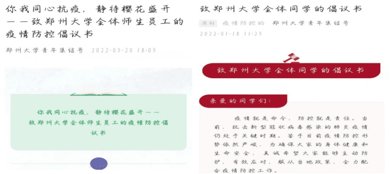
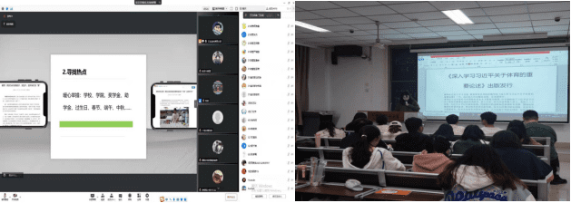
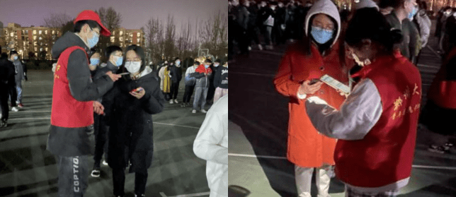

同心抗疫、共克时艰：防疫抗疫 郑大青年在行动
日期: 2022年03月30日 信息来源: 党委宣传部 校团委
当前，国内疫情防控形势严峻复杂，为守护广大干部师生生命和健康安全，把病毒隔离于校门之外，郑州大学于近期在各校区校园实施单独运行的封闭管理。封闭管理实施以来，干部职工扛起责任、主动作为，广大师生理解支持、积极配合，学校整体运行平稳有序，教学科研活动正常开展。为展示广大干部师生在疫情防控工作中的责任与担当，辛勤和付出，我们于即日起开辟“同心抗疫、共克时艰”专栏。在此，我们也希望广大干部师生强化防控意识，持续绷紧思想之弦；严格落实要求，全面做到科学防控；坚定信心决心，切勿过度恐慌焦虑；践行文明理念，养成良好生活习惯；潜心笃行问道，完成教学科研任务。让我们同心坚守，共待春晖，为打赢这场疫情防控战奉献自己的一份力量！
防疫抗疫 郑大青年在行动
自学校发布《郑州大学常态化疫情防控与校园平安工作领导小组办公室疫情防控措施紧急提醒》后，为守护师生生命健康，安全筑牢坚固防线，校团委积极响应、迅速行动，号召广大青年学子为防疫抗疫贡献青春力量。
宣传引导 筑牢疫情防控战线
校团委通过持续宣传疾病防控知识、相关法规政策、生活防疫常识系列的宣传活动，进一步提高了广大师生思想认识，提升师生文明素质和自我保护意识、防控意识，引导广大师生“不造谣、不传谣、不信谣”。 为进一步加强防疫宣传教育引导，校团委充分利用郑州大学青年集结号、厚德助姐等新媒体平台发布《致全体同学关于新型冠状病毒感染肺炎防治的倡议书》等网络文章，转载河南省教育厅、河南共青团发布的防疫信息和防控成果，专题报道防疫一线干部、党员、志愿者积极投入疫情防控和坚守岗位的典型事迹，从而引导全校师生坚定信心，科学防控，为打赢疫情防控阻击战营造了良好的舆论氛围。
多样活动 情暖校园共抗疫情
为丰富校园活动，校团委积极组织开展特色活动，邀请传媒“大咖”举办青年创新讲堂，开展挑战杯大赛公益讲座、学术沙龙服务青年学子创新成才，通过“3·15”权益系统法律知识培训讲座帮助学生更好维护自身权益，招募志愿者、鼓励青年学子践行时代担当。 在此号召下，各基层团委于3月份开展“思政第一课”主题团日活动，采用线上线下结合的方式，以学习文件、视频影像等资料，带领团员青年深入学习习近平总书记重要讲话精神、党的十九届六中全会精神、省第十一次党代会精神等，从而引领青年思想，凝聚青春力量。
志愿奉献 郑大学子求是担当
在校园疫情防控的关键时刻，全校团干和青年志愿者秉持全心全意为同学服务的宗旨，敢为人先，冲锋在前，全力参与学校防疫工作。每次疫情防控，“红马甲”们都冲锋在前：寒假在家，主动向社区报道，开展防控工作；开学返校，积极协助同学安全返校；日常校区的全员核酸，帮助检测，维持秩序…… “红马甲”的身影为郑大增添了新的底色，更激励我们每个人筑牢责任的堤坝。郑大青年于平凡中谱写非凡，于困难中勇铸担当。上下同心者胜，同舟共济者赢。在这场疫情防控歼灭战中，郑大全体师生迎难而上、连续奋战、不等不靠，用责任和担当书写大爱，构筑起守护师生生命健康的安全防线。
作者：zzu